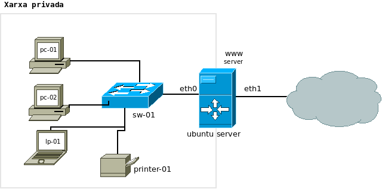

Unitat 2. Servei DNS
Pràctica 2: Domini local
3. Servidor de domini local
A l'empresa Aplicacions i Serveis (A&S) heu decidit instal·lar un servidor DNS en la xarxa local, d'esta forma serà més fàcil localitzar els dispositius de xarxa i els equips i accelerar la resolució de noms DNS gràcies a la funcionalitat de cau del servidor.
Xarxa de treball DNS

1. Donat l'esquema anterior completa primer la següent taula associant adreces IP i noms.
| Nom de domini | Adreça IP |
| pc-01 |
.1 |
| pc-02 |
.. |
2. Una vegada completada la taula anterior crea el fitxer de configuració de la zona i el de la zona inversa.
Llicenciat sota la Llicència Creative Commons Reconeixement CompartirIgual 4.0